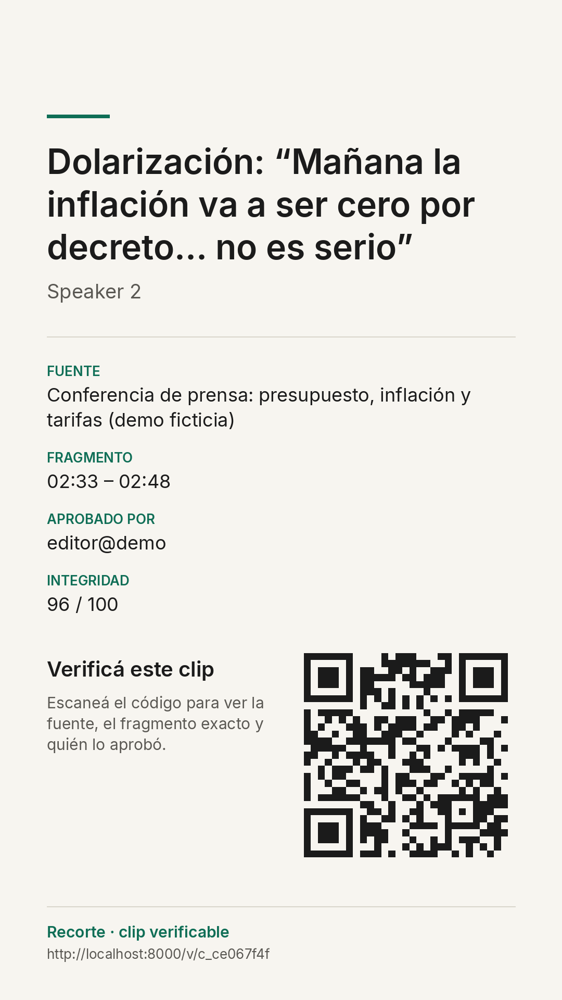
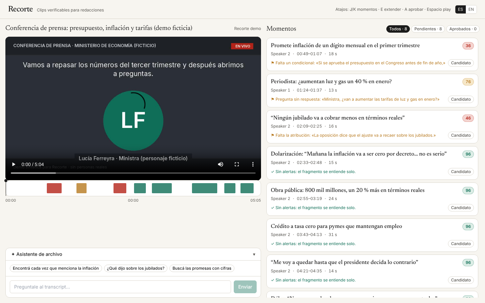
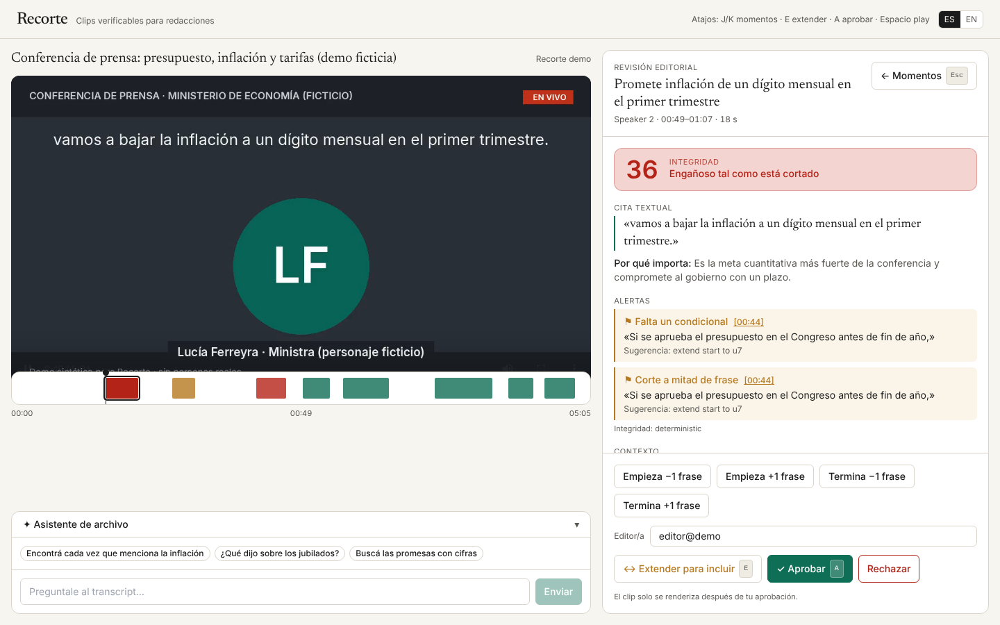
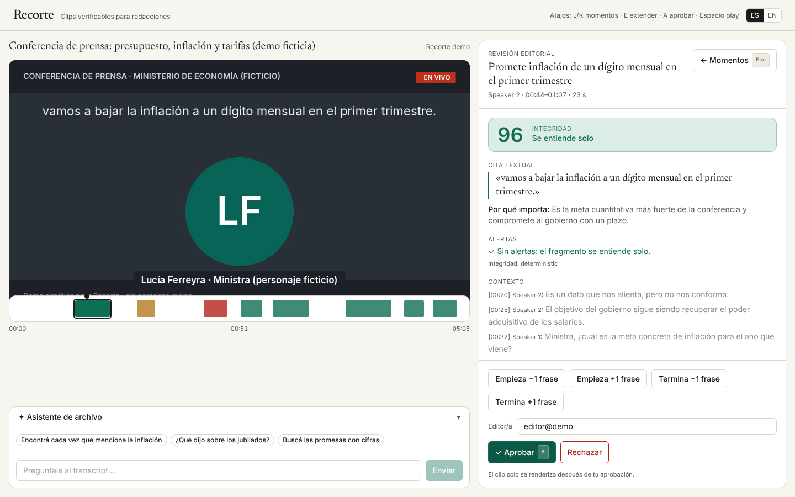
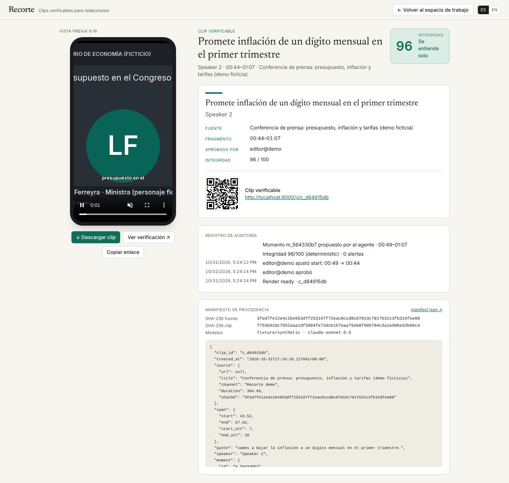
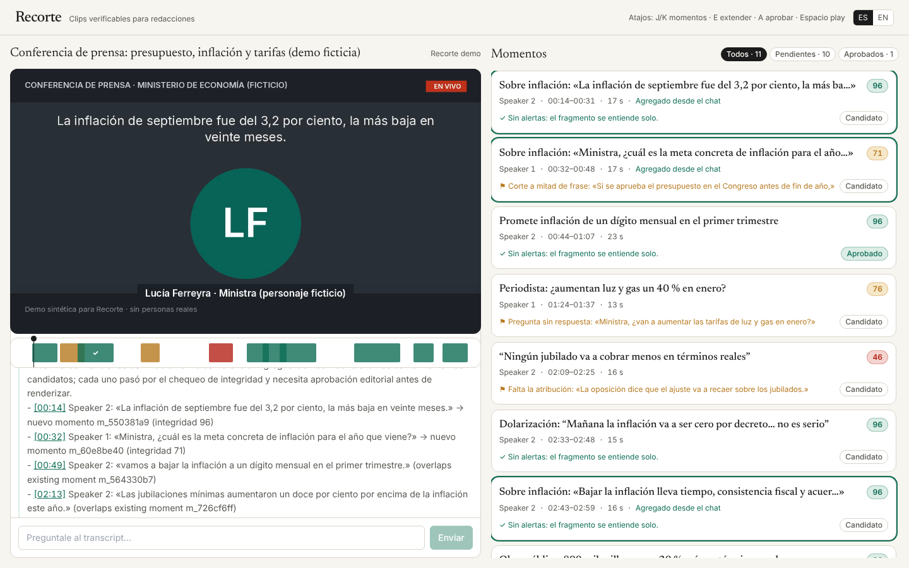
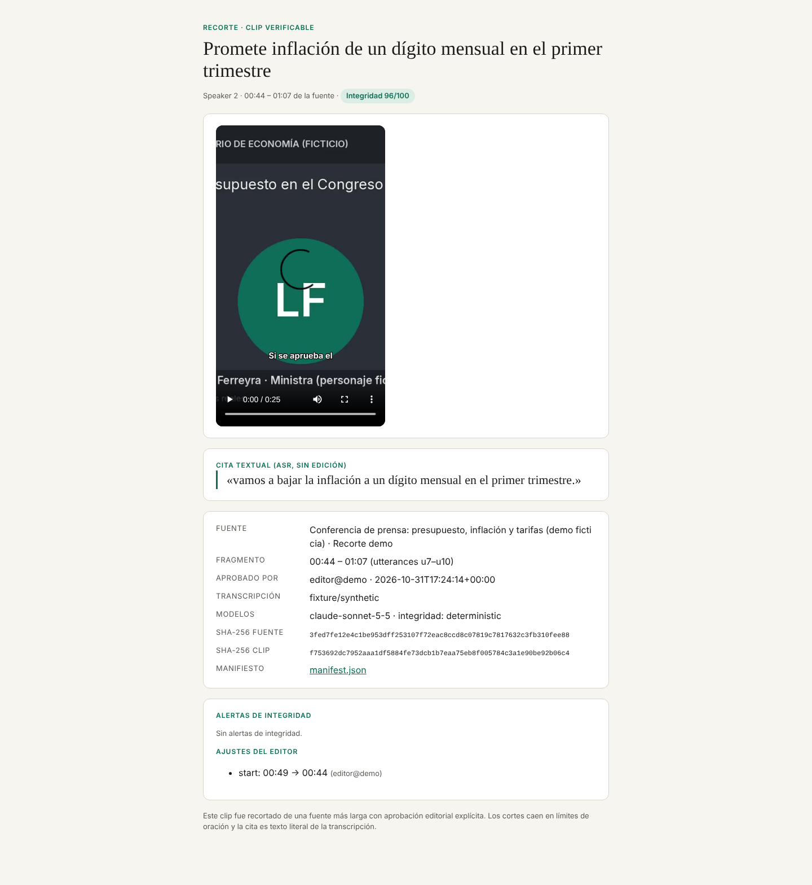

Clips verificables para redacciones
Un agente que convierte video largo —conferencias de prensa, entrevistas, debates— en clips verticales que un medio puede defender: sin cortes a mitad de frase, sin condicionales perdidos, con aprobación editorial obligatoria y procedencia en cada clip.
La demo
Grabación del flujo completo: fuente → momentos con puntaje de integridad → revisión editorial → render → exportación con manifiesto → chat de archivo.
Qué es
Recorte convierte video largo de redacción —conferencias de prensa, entrevistas, debates— en clips 9:16 listos para publicar que un medio puede defender. Un agente transcribe la fuente con marcas de tiempo por palabra, detecta 6–10 momentos noticiosos y le asigna a cada uno un puntaje de integridad (0–100), señalando contexto recortado con evidencia textual: un condicional perdido como "si se aprueba el presupuesto", una atribución ausente, una pregunta separada de su respuesta, ironía leída en serio. Los cortes caen siempre en límites de oración y las citas se validan como texto literal de la transcripción. Nada se renderiza hasta que un editor revisa el fragmento con 20 s de contexto, lo extiende con un clic y lo aprueba: el endpoint de render rechaza lo no aprobado. Cada clip lleva subtítulos, una placa final con fuente, minuto, aprobador y QR, y un manifiesto de procedencia con hashes SHA-256 de fuente y clip, respaldado por una página pública de verificación. Un chat busca en la transcripción y propone nuevos clips. En español, offline, ~US$0,06 por clip.
English. Recorte turns long newsroom video into publish-ready 9:16 clips a newsroom can defend. Every candidate moment carries an integrity score and typed flags with verbatim transcript evidence; cuts snap to sentence boundaries; quotes are validated as literal transcript text. Nothing renders without an explicit editor approval. Each clip ships with burned captions, an end card (source, timestamp, approver, QR) and a provenance manifest with SHA-256 hashes, backed by a public verification page. Positioning: "Overlap for newsrooms, with an editorial conscience."
El clip
Salida real del sistema: 1080×1920, subtítulos quemados desde la transcripción, y una placa final de 2 s con fuente, fragmento, aprobador, puntaje y QR a la página de verificación.
Promete inflación de un dígito mensual en el primer trimestre
La editora hace clic en Extender para incluir: el fragmento pasa a 00:44–01:07 y vuelve a puntuarse 96. Recién entonces Aprobar dispara el render. El ajuste queda registrado en el manifiesto y en la página de verificación.

Cómo funciona
Un pipeline de pasos idempotentes con una sola compuerta humana antes del render. Cada paso con LLM degrada a reglas deterministas o fixtures si no hay clave o red: la demo corre offline.
Ingesta y transcripción
yt-dlp + ffmpeg; Deepgram nova-3 en español (fallbacks: nova-2, AssemblyAI, Whisper). Palabras con timestamps, hablantes diarizados, SHA-256 de la fuente.
Agente de momentos
Claude Sonnet lee la transcripción compacta y propone 6–10 momentos con titular, cita y relevancia vía tool call estructurado. El código ajusta a límites de oración, acota a 12–75 s, dedupe y rechaza cualquier cita que no sea texto literal.
Chequeo de integridad
Reglas deterministas (condicionales, atribución, pregunta sin respuesta, idea partida) + Claude Haiku con 20 s de contexto. Puntaje 0–100 y alertas tipadas con evidencia textual y timestamp.
Revisión editorial
Cita literal, alertas, contexto atenuado, ±1 frase, "Extender para incluir" que re-puntúa. Aprobar o rechazar con motivo. El render devuelve 409 sin aprobación.
Render 9:16
ffmpeg: corte, recorte centrado, 1080×1920, subtítulos ASS desde las palabras, placa final con QR, concatenación. ~20 s por clip en una laptop.
Procedencia y archivo
Manifiesto JSON con hashes de fuente y clip, aprobación, ajustes y modelos; página pública /v/{clip_id}. Un chat con herramientas busca en la transcripción y propone momentos nuevos.
Capturas
La fuente de la demo es una conferencia de prensa ficticia (sin personas reales) con el texto hablado en pantalla, para poder demostrar el flujo sin red ni claves.






Criterios del jurado
Correrlo en tu máquina
Requiere Python 3.11+, Node 20+ y ffmpeg (con libass para subtítulos quemados). Sin claves funciona en modo offline con la fuente de demo.
git clone https://github.com/altair-wq/recorte.git && cd recorte
cp .env.example .env
make setup
make fixtures # fuente de demo offline + clip de respaldo (~45 s)
make dev # backend :8000 + frontend :5173
# abrir http://localhost:5173 → "Fuente de demo"